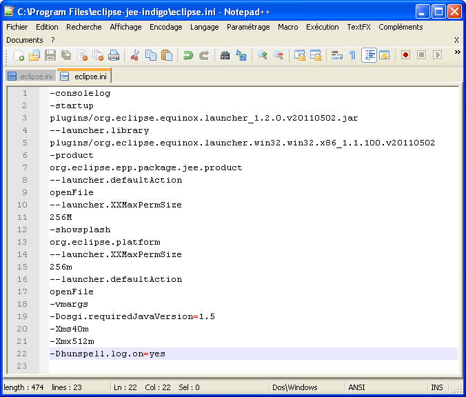
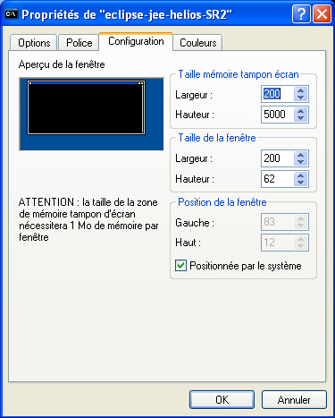
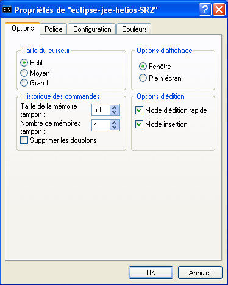
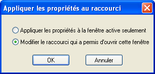
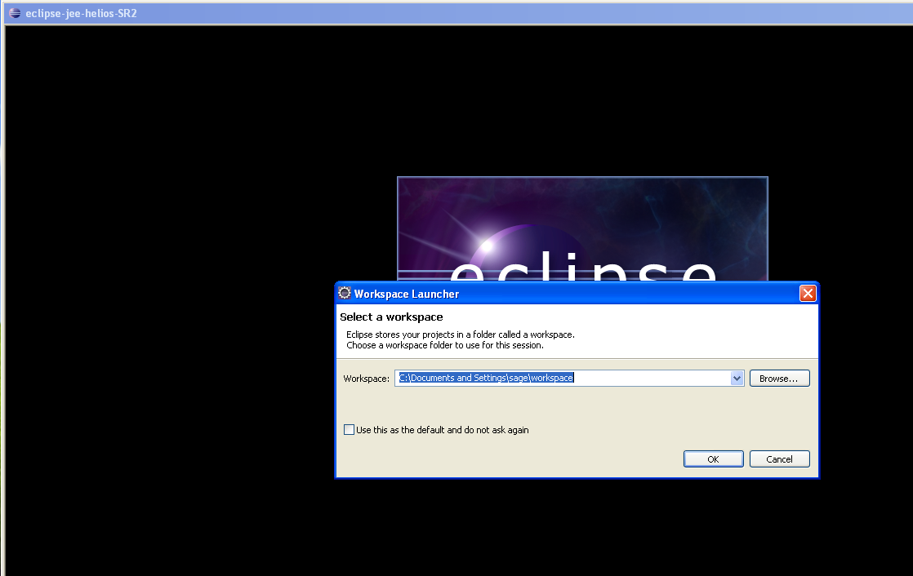
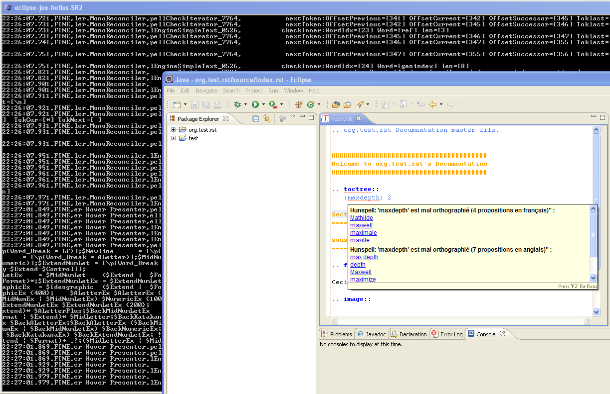
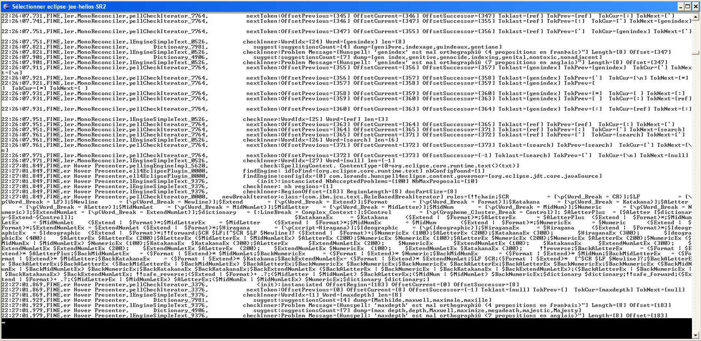
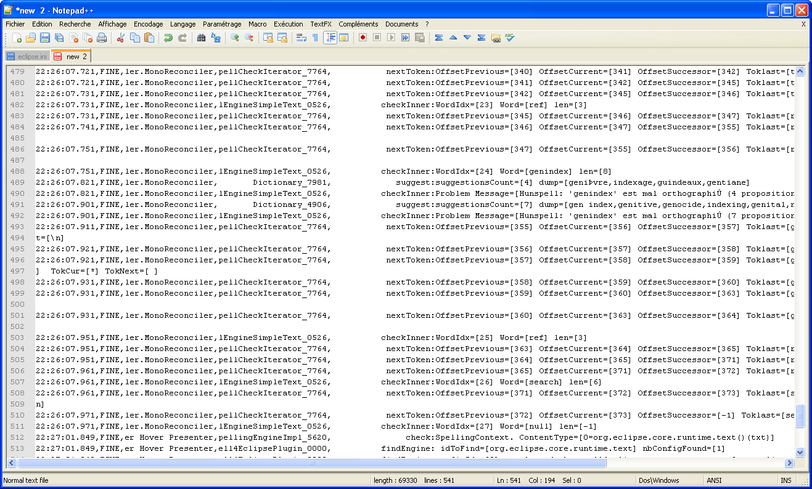

Howto trace the activity of the Hunspell4Eclipse plug-in
To facilitate our debugging tasks when you report us an issue, it would be great if you
attach a trace file to the bug repport.
This page presents the steps you must follow to produce easily a trace file:
- Configure Eclipse
- Launch Eclipse and configure the window of the console
- Open your workspace
- Reproduce the issue you detected
- Select and copy the trace lines
- Paste the trace lines in your text editor and save
Configure Eclipse
Add two lines in the "eclipse.ini" file which is located in the same
folder as the Eclipse launcher.
- Add the first argument as
-consolelog
- Set the jvm property "hunspell.log.on" to activate the logging tool of the huspell4Eclipse plug-in
-Dhunspell.log.on=yes

Launch eclipse and configure the window of the console
Set 220 columns, 5000 lines and the fast edition capability.


Don't forget to associate these settings to the link which opens this console.

Open your workspace

Reproduce the problem you detected

Select and copy the trace lines

Paste the trace lines in your text editor and save
